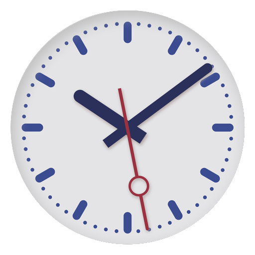

spoor
13b
intercity

Deventer
via Rotterdam Alexan, Gouda,
Utrecht Centraal, Amesfoort
en Apeldoorn
21:35 Intercity Leeuwarden rijdt niet
09:20 Intercity Deventer

spoor
13intercity
via Rotterdam Alexan, Gouda,
Utrecht Centraal, Amesfoort
en Apeldoorn
21:35 Intercity Leeuwarden rijdt niet
09:20 Intercity Deventer